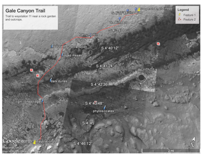

Hikes that are out of this world!
Home
Back to Rover Hikes

Gale Canyon Hike Information
Distance: 7.62mile
Elevation Gain/Loss: 108ft/-111ft
Average Slope: 5.9%/-3.1%
Hike Rating: Very Difficult
Max Slope: 14.2%/-9.7%